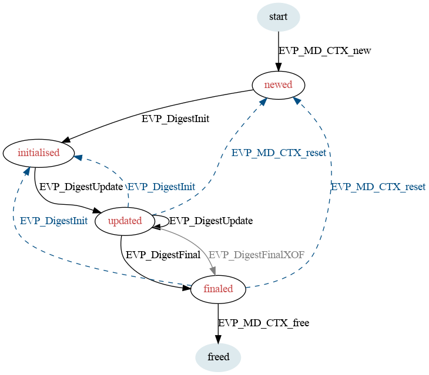

life_cycle-digest - The digest algorithm life-cycle
All message digests (MDs) go through a number of stages in their life-cycle:
This state represents the MD before it has been allocated. It is the starting state for any life-cycle transitions.
This state represents the MD after it has been allocated.
This state represents the MD when it is set up and capable of processing input.
This state represents the MD when it is set up and capable of processing additional input or generating output.
This state represents the MD when it has generated output.
This state is entered when the MD is freed. It is the terminal state for all life-cycle transitions.
The usual life-cycle of a MD is illustrated:

This section defines all of the legal state transitions. This is the canonical list.
| Function Call | Current State | |||||
|---|---|---|---|---|---|---|
| start | newed | initialised | updated | finaled | freed | |
| EVP_MD_CTX_new | newed | |||||
| EVP_DigestInit | initialised | initialised | initialised | initialised | ||
| EVP_DigestUpdate | updated | updated | ||||
| EVP_DigestFinal | finaled | |||||
| EVP_DigestFinalXOF | finaled | |||||
| EVP_MD_CTX_free | freed | freed | freed | freed | freed | |
| EVP_MD_CTX_reset | newed | newed | newed | newed | ||
| EVP_MD_CTX_get_params | newed | initialised | updated | |||
| EVP_MD_CTX_set_params | newed | initialised | updated | |||
| EVP_MD_CTX_gettable_params | newed | initialised | updated | |||
| EVP_MD_CTX_settable_params | newed | initialised | updated | |||
At some point the EVP layer will begin enforcing the transitions described herein.
provider-digest(7), EVP_DigestInit(3)
Copyright 2021 The OpenSSL Project Authors. All Rights Reserved.
Licensed under the Apache License 2.0 (the "License"). You may not use this file except in compliance with the License. You can obtain a copy in the file LICENSE in the source distribution or at https://www.openssl.org/source/license.html.